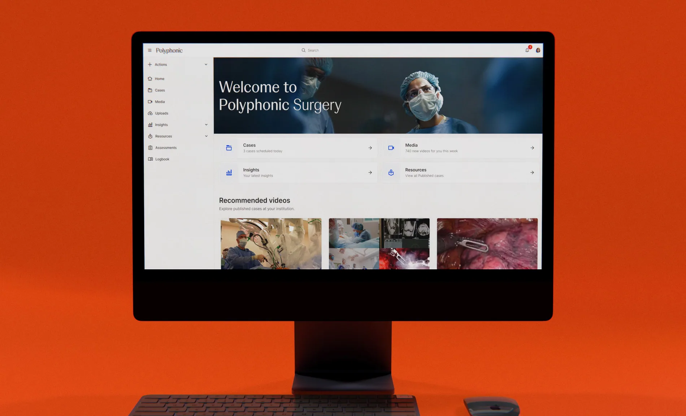
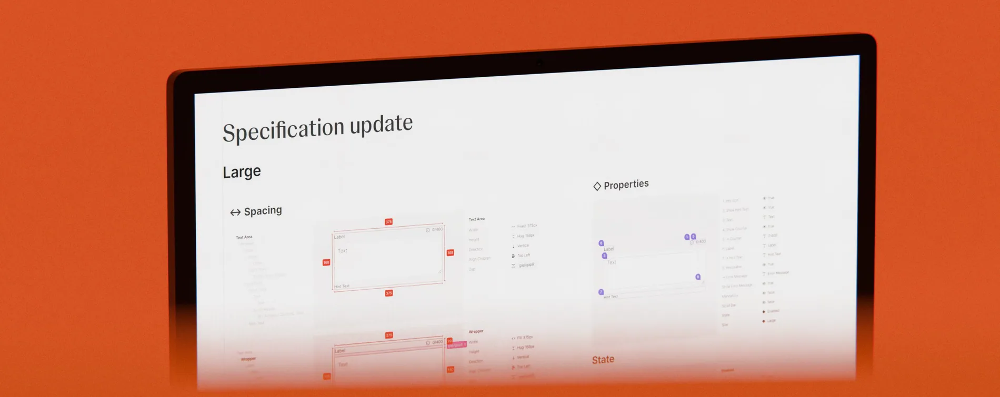
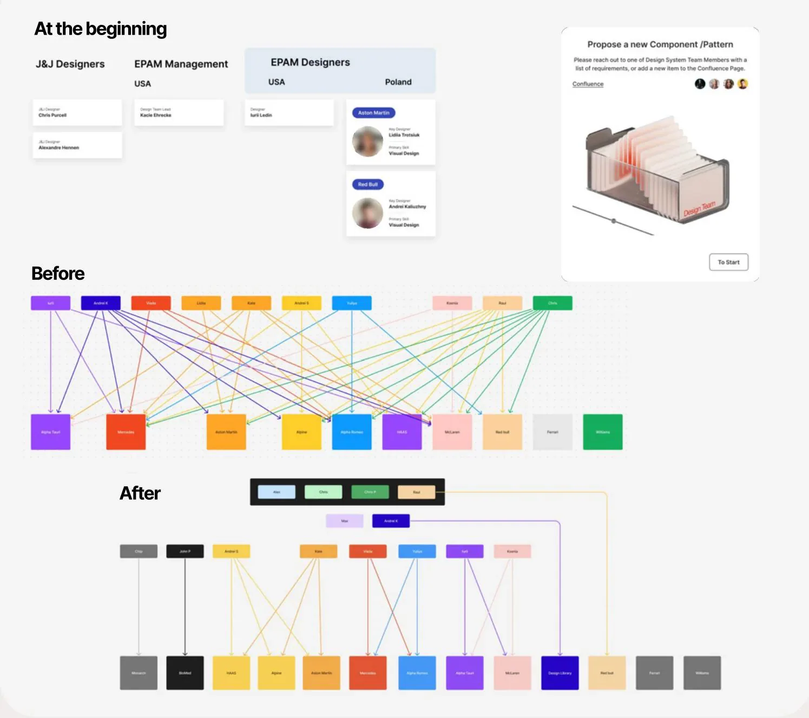
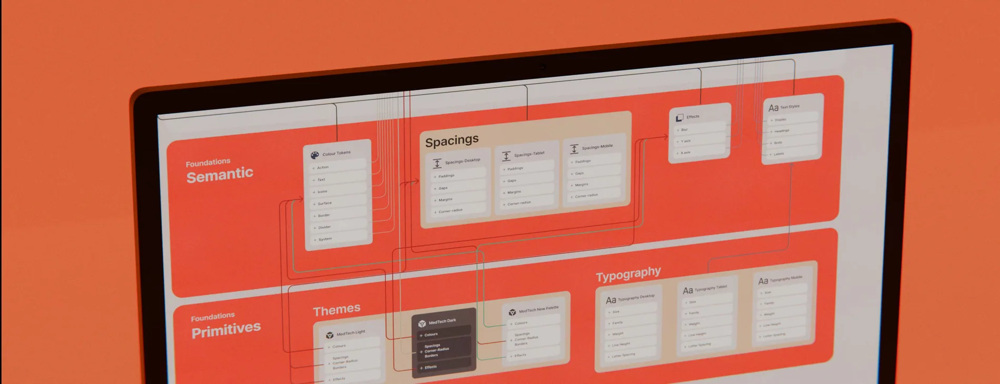
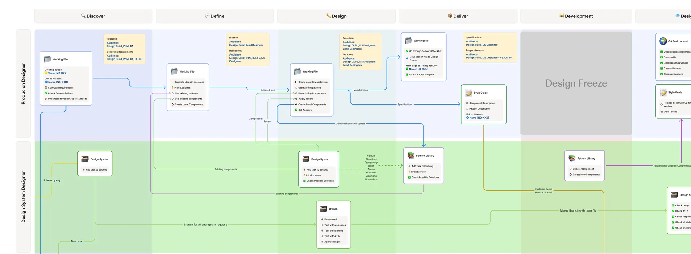
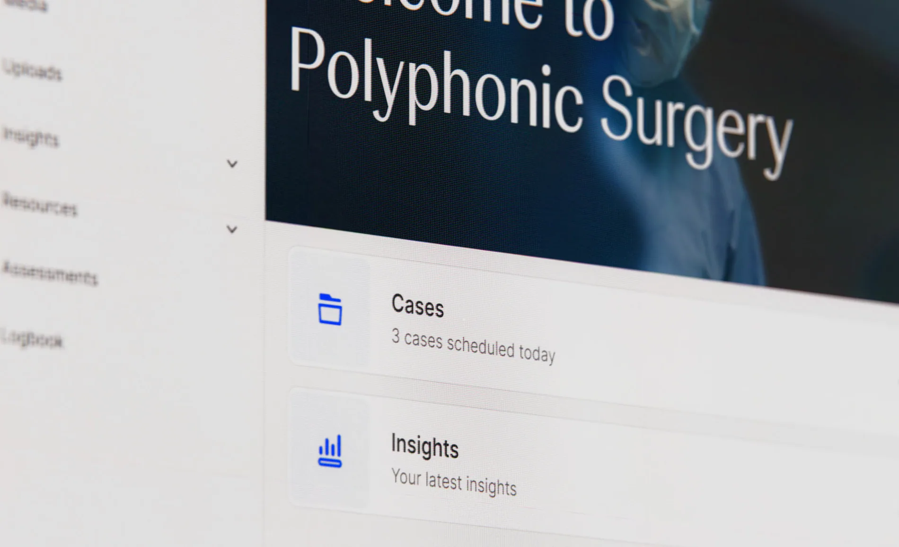

Johnson & Johnson
Connected surgery, designed as a system.
SCROLL TO EXPLORE ↓
Turning a fragmented connected-surgery ecosystem into a clearer design operation, reusable platform system and path to release.
A connected surgical platform needed more than a component library. The work brought product priorities, team ownership and repeatable decisions into one shared delivery model.
- Project
- Johnson & Johnson
- Role / disciplines
- Design leadership / Design systems
- Period
- 2023 — Present
Before scaling interfaces, we needed to scale clarity
The product needed a shared delivery model as much as it needed a visual language.
One ecosystem. Many moving parts
Polyphonic brought surgical video, case management, procedure planning and telepresence into a connected digital ecosystem

The initial design effort combined a prototype, overlapping component libraries and growing requirements. I worked with the Head of Design, Design Directors, Product Owners and engineering partners to connect product priorities with the way the team delivered.
Create a plan before asking for speed
A delivery model was needed to turn a complex prototype into an achievable release.

I mapped responsibilities and core flows, audited the existing library and established an action plan. I proposed additional capacity as scope grew and introduced regular communication, decision trees and clearer ownership.
A design system is an operating model
A component library alone could not resolve ownership, handoff or inconsistent implementation.

I led a component audit, structured foundations and reusable layers, introduced controlled editing rights and aligned the component roadmap with engineering. Knowledge-sharing and retrospectives kept design decisions connected across functions.
Shared rules made the system reusable beyond one team or screen
Make implementation quality visible
Delivery becomes fragile when current component behavior and decisions live in scattered files.

I created a component specification template for design, engineering and QA. Change logs, archived versions and status tracking gave contributors a clearer way to understand what was ready, what changed and what required verification.
Make room for the next product area
As functionality and accessibility requirements expanded, the existing navigation needed a clearer hierarchy.

Working with the client, I revisited the information architecture and used card sorting to understand how content should be grouped. A collapsible left-side navigation was proposed to accommodate multiple product areas.
A platform scales when decisions become repeatable.
The strongest evidence is the combination of decisions, delivery and observable change.
* Figures reflect the period of work shown in the portfolio and may differ from the current situation.